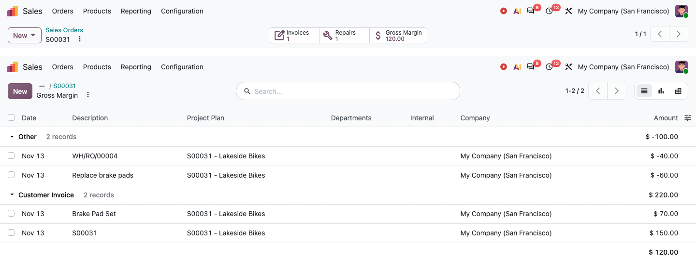
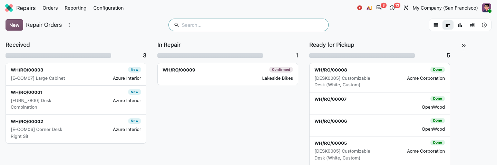
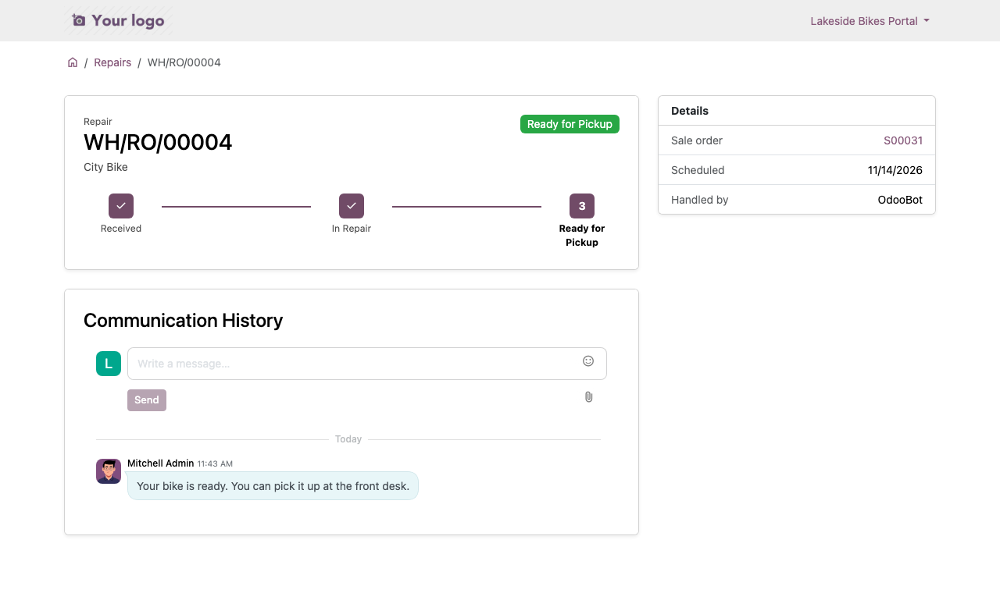

Repair Job Costing
Job costing, stages, photos and a customer portal page for repairs sold on sale orders.

Job costing, stages, photos and a customer portal page for repairs sold on sale orders.
Repair with its timesheets: hours and labor cost, and the analytic account of the sale order.

Repair photos: thumbnails that open full size.

Gross margin of a sale order: invoiced revenue, parts and labor on one account.

Repair Margin report: revenue and costs per customer and repaired product.

Repairs by stage.

The customer's repair page in the portal.
